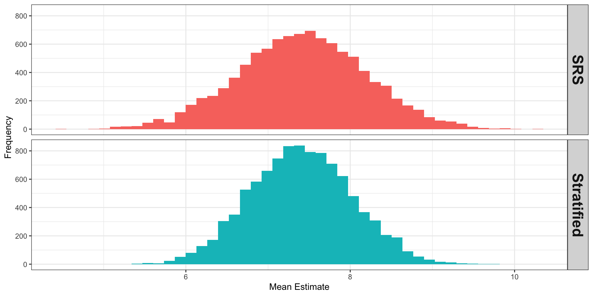
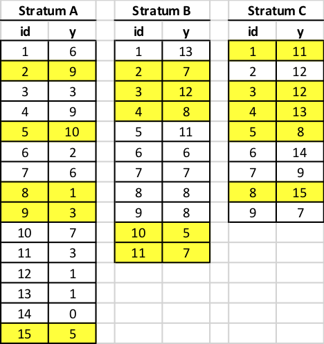
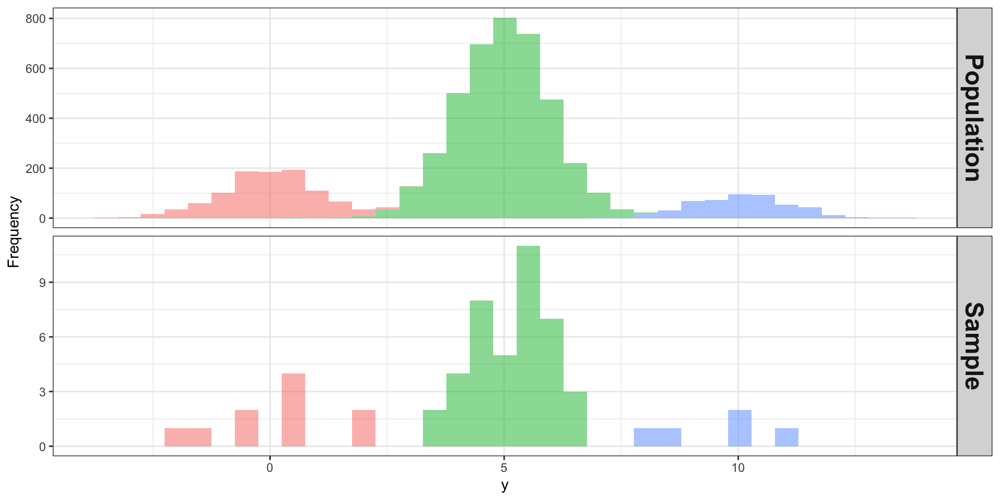

PUBHBIO 7225 Lecture 6
Topics
Activities
Assignments
The process:
STEP 1: Divide the population into \(H\) subpopulations, called strata
STEP 2: Draw an independent probability sample from each stratum (could be an SRS, or other design), then pool the information to obtain overall population estimates
Observations within strata tend to be more homogeneous than observations in the population as a whole
Reduced variance within strata often leads to a reduced variance for the population-level estimate
Thus we want the stratification variable(s) to be related to the \(y\) variable(s) of interest – want to get different means of \(y\) across strata
Throughout this lecture we will assume an SRS is taken in each stratum
Reasons to stratify include:
Protect against (small) chance of getting a really bad sample
Want to ensure specific precision for certain subgroups
May be a cost benefit (easier to administer survey in some strata)
Lower variance for overall estimates (e.g, estimates for \(\bar{y}_U\))
Construct a Stratified Sample Estimator (Part 1)
You took a sample of size \(n=15\) from a population of size \(N=35\)
But each of the 15 sampled units doesn’t “represent” the same number of population units
| Stratum | Units in Population | Units in Sample | Each Sampled Unit “Represents”: |
| Stratum A | 15 | 5 | 15/5 = 3 |
| Stratum B | 11 | 5 | 11/5 = 2.2 |
| Stratum C | 9 | 5 | 9/5 = 1.8 |
This sample is not EPSEM – simple unweighted average of the sampled \(y\) will be biased
Larger strata are “under-represented” in the sample
43% of the population comes from Stratum A (15/35), but
33% of the sample comes from Stratum A (5/15)!
We need to “upweight” the units that “represent” more units
| Stratum | Population Size | Sample Size |
|---|---|---|
| A | \(N_1 = 15\) | \(n_1=5\) |
| B | \(N_2 = 11\) | \(n_2=5\) |
| C | \(N_3 = 9\) | \(n_3=5\) |
| Total | \(N=N_1+N_2+N_3=35\) | \(n=n_1+n_2+n_3=15\) |
| Quantity | Estimand (Truth) | Estimate |
|---|---|---|
| Stratum Mean | \(\displaystyle \bar{y}_{hU}=\frac{1}{N_h} \sum_{j=1}^{N_h} y_{hj}\) | \(\displaystyle \bar{y}_h = \frac{1}{n_h} \sum_{j\in \mathcal{S}_h} y_{hj}\) |
| Stratum Total | \(\displaystyle t_h = \sum_{j=1}^{N_h} y_{hj}= N_h \bar{y}_{hU}\) | \(\displaystyle \hat{t}_h = N_h \bar{y}_h = \frac{N_h}{n_h} \sum_{j\in \mathcal{S}_h} y_{hj}\) |
| Stratum Variance (of \(y\)) | \(\displaystyle S_h^2=\frac{1}{N_h-1} \sum_{j=1}^{N_h} (y_{hj}- \bar{y}_{hU})^2\) | \(\displaystyle s_h^2=\frac{1}{n_h-1} \sum_{j\in \mathcal{S}_h} (y_{hj}- \bar{y}_h)^2\) |
| Stratum Proportion | \(\displaystyle p_{hU}=\bar{y}_{hU}=\frac{1}{N_h} \sum_{j=1}^{N_h} y_{hj}\) | \(\displaystyle \hat{p}_h = \frac{1}{n_h} \sum_{j\in \mathcal{S}_h} y_{hj}\) |
| Stratum Variance (of binary \(y\)) | \(\displaystyle S_h^2 = \frac{N_h}{N_h-1} p_{hU}(1-p_{hU})\) | \(\displaystyle s_h^2 = \frac{n_h}{n_h-1} \hat{p}_{h}(1-\hat{p}_{h})\) |
Suppose my activity sample was:

We can then calculate/estimate:
Stratum A \((h=1)\): \(N_1 = 15, n_1=5\)
Stratum A population mean: \[\begin{aligned}
%\bar{y}_{hU} & =\frac{1}{N_h} \sum_{j=1}^{N_h} y_{hj}\\
\bar{y}_{1U} &=\frac{1}{N_1} \sum_{j=1}^{N_1} y_{1j} = \frac{1}{15} \left(6+9+3+9+\cdots+5\right) = \textcolor{red}{\bf 4.4}
\end{aligned}\]
Stratum A sample mean: \[\begin{aligned} %\bar{y}_h &= \frac{1}{n_h} \sum_{j\in \mathcal{S}_h} y_{hj}\\ \bar{y}_1 &= \frac{1}{n_1} \sum_{j\in \mathcal{S}_1} y_{1j} = \frac{1}{5} \left(9+10+1+3+5\right) = \textcolor{blue}{\bf 5.6} \end{aligned}\]
My estimate of the mean from my sample is 5.6; close to the true mean of 4.4
Not new formula – just the SRS formulae
Stratum A population variance of \(y\):
\[\begin{aligned} S_h^2&=\frac{1}{N_h-1} \sum_{j=1}^{N_h} (y_{hj}- \bar{y}_{hU})^2 \\ S_1^2&=\frac{1}{N_1-1} \sum_{j=1}^{N_1} (y_{1j} - \bar{y}_{1U})^2 \\ &= \frac{1}{15-1} \sum_{j=1}^{15} (y_{1j} - 4.4)^2 \\ & = \frac{1}{15-1} \left[ (6-4.4)^2 + \cdots + (5-4.4)^2 \right] \\ &= \textcolor{red}{\bf 10.83} \end{aligned}\]
Stratum A sample variance of \(y\):
\[\begin{aligned} s_h^2&=\frac{1}{n_h-1} \sum_{j\in \mathcal{S}_h} (y_{hj}- \bar{y}_h)^2 \\ s_1^2&=\frac{1}{n_1-1} \sum_{j\in \mathcal{S}_h} (y_{1j} - \bar{y}_1)^2 \\ &= \frac{1}{5-1} \sum_{j\in \mathcal{S}_h} (y_{1j} - 5.6)^2 \\ &= \frac{1}{5-1}\left[ (9-5.6)^2 + \cdots + (5-5.6)^2 \right] \\ &= \textcolor{blue}{\bf 14.8} \end{aligned}\]
My estimate of \(V(y)\) from my sample is 14.8; close-ish to the true variance of 10.8
Again, not new formula – just the SRS formulae
Similar calculations for the other 2 strata yield:
Means:
| Population | My Sample | |
|---|---|---|
| Stratum A \((h=1)\) | \(\bar{y}_{1U} = 4.4\) | \(\bar{y}_1 = 5.6\) |
| Stratum B \((h=2)\) | \(\bar{y}_{2U} = 8.36\) | \(\bar{y}_2 = 7.8\) |
| Stratum C \((h=3)\) | \(\bar{y}_{3U} = 11.22\) | \(\bar{y}_3 = 11.8\) |
Variances: (variance of \(y\), not of the mean of \(y\))
| Population | My Sample | |
|---|---|---|
| Stratum A \((h=1)\) | \(S_1^2 = 10.83\) | \(s_1^2 = 14.8\) |
| Stratum B \((h=2)\) | \(S_2^2 = 6.45\) | \(s_2^2 = 6.7\) |
| Stratum C \((h=3)\) | \(S_3^2 = 7.44\) | \(s_3^2 = 6.7\) |
Next step will be to combine the stratum estimates to get overall estimate (of the mean)
Construct a Stratified Sample Estimator (Part 2)
Then combine stratum-specific estimates to get overall estimates:
| Quantity | Estimand (Truth) | Estimate |
|---|---|---|
| Overall Total | \(\displaystyle t = \sum_{h=1}^H \sum_{j=1}^{N_h} y_{hj}= \sum_{h=1}^H t_h = \sum_{h=1}^H N_h \bar{y}_{hU}\) | \(\displaystyle \hat{t}_{str}= \sum_{h=1}^H \hat{t}_h= \sum_{h=1}^H N_h \bar{y}_h\) |
| Overall Mean | \(\displaystyle \bar{y}_U = \frac{t}{N} = \frac{1}{N} \sum_{h=1}^H N_h \bar{y}_{hU} = \sum_{h=1}^H \frac{N_h}{N} \bar{y}_{hU}\) | \(\displaystyle \bar{y}_{str}= \sum_{h=1}^H \frac{N_h}{N} \bar{y}_h\) |
| Overall Proportion | \(\displaystyle p = \bar{y}_U = \sum_{h=1}^H \frac{N_h}{N} p_{hU}\) | \(\displaystyle \hat{p}_{str}= \sum_{h=1}^H \frac{N_h}{N} \hat{p}_h\) |
Intuition:
| Population | My Sample | |||||
|---|---|---|---|---|---|---|
| Mean | Variance | Mean | Variance | |||
| Stratum A | \(N_1=15\) | \(n_1=5\) | \(\bar{y}_{1U} = 4.4\) | \(S_1^2 = 10.83\) | \(\bar{y}_1 = 5.6\) | \(s_1^2 = 14.8\) |
| Stratum B | \(N_2=11\) | \(n_2=5\) | \(\bar{y}_{2U} = 8.36\) | \(S_2^2 = 6.45\) | \(\bar{y}_2 = 7.8\) | \(s_2^2 = 6.7\) |
| Stratum C | \(N_3=9\) | \(n_3=5\) | \(\bar{y}_{3U} = 11.22\) | \(S_3^2 = 7.44\) | \(\bar{y}_3 = 11.8\) | \(s_3^2 = 6.7\) |
Overall population mean: \[\bar{y}_U = \sum_{h=1}^H \frac{N_h}{N} \bar{y}_{hU} = \frac{N_1}{N} \bar{y}_{1U} + \frac{N_2}{N} \bar{y}_{2U} + \frac{N_3}{N} \bar{y}_{3U} = \frac{15}{35} (4.4) + \frac{11}{35} (8.36) + \frac{9}{35} (11.22) = \textcolor{red}{\bf 7.4}\]
My sample estimate of overall mean: \[\begin{aligned} \bar{y}_{str}= \sum_{h=1}^H \frac{N_h}{N} \bar{y}_h &= \frac{N_1}{N} \bar{y}_1 + \frac{N_2}{N} \bar{y}_2 + \frac{N_3}{N} \bar{y}_3 = \frac{15}{35} (5.6) + \frac{11}{35} (7.8) + \frac{9}{35} (11.8) = \textcolor{blue}{\bf 7.89} \\ \end{aligned}\]
Since we are taking an SRS within each stratum, stratum-specific estimates are unbiased: \[E(\bar{y}_h) = \bar{y}_{hU} \quad\quad\quad E(\hat{t}_h) = t_{hU} \quad\quad\quad E(\hat{p}_h) = p_{hU}\]
This implies that: \[\begin{flalign} E(\bar{y}_{str}) &= E\left(\sum_{h=1}^H \frac{N_h}{N} \bar{y}_h \right) = &% \sum_{h=1}^H \frac{N_h}{N} E(\ybar_h) = \sum_{h=1}^H \frac{N_h}{N} \ybar_{hU} = \ybar_U \end{flalign}\]
Samples are taken independently in each stratum.
Remember that if \(X\) and \(Y\) are independent, \(V(X+Y) = V(X)+V(Y)\). Thus: \[\begin{flalign} V(\bar{y}_{str}) &= V\left(\sum_{h=1}^H \frac{N_h}{N} \bar{y}_h \right) =&% = \sum_{h=1}^H V \left( \frac{N_h}{N} \ybar_h \right) = \sum_{h=1}^H \left(\frac{N_h}{N}\right)^2 V(\ybar_h) = \sum_{h=1}^H \left(\frac{N_h}{N}\right)^2 \fpchpar \frac{S_h^2}{n_h} \end{flalign}\]
| Estimate | Expected Value | Variance | |
| Mean: \(\bar{y}_{str}\) | \(E(\bar{y}_{str})= \bar{y}_U\) | Truth: | \(\displaystyle V(\bar{y}_{str})= \sum_{h=1}^H \left(\frac{N_h}{N}\right)^2 \left(1-\frac{n_h}{N_h}\right)\frac{S_h^2}{n_h}\) |
| Estimate: | \(\displaystyle \widehat{V}(\bar{y}_{str})= \sum_{h=1}^H \left(\frac{N_h}{N}\right)^2 \left(1-\frac{n_h}{N_h}\right)\frac{s_h^2}{n_h}\) | ||
| Total: \(\hat{t}_{str}\) | \(E(\hat{t}_{str})=t\) | Truth: | \(\displaystyle V(\hat{t}_{str})=\sum_{h=1}^H N_h^2 \left(1-\frac{n_h}{N_h}\right)\frac{S_h^2}{n_h}\) |
| Estimate: | \(\displaystyle \widehat{V}(\hat{t}_{str})=\sum_{h=1}^H N_h^2 \left(1-\frac{n_h}{N_h}\right)\frac{s_h^2}{n_h}\) | ||
| Proportion: \(\hat{p}_{str}\) | \(E(\hat{p}_{str})=p\) | Truth: | \(\displaystyle V(\hat{p}_{str})= \sum_{h=1}^H \left(\frac{N_h}{N}\right)^2 \left(\frac{N_h-n_h}{N_h-1}\right) \frac{p_{hU}(1-p_{hU})}{n_h}\) |
| Estimate: | \(\displaystyle \widehat{V}(\hat{p}_{str}) = \sum_{h=1}^H \left(\frac{N_h}{N}\right)^2 \left(1-\frac{n_h}{N_h}\right)\frac{\hat{p}_h(1-\hat{p}_h)}{n_h-1}\) |
| Population | My Sample | |||||
|---|---|---|---|---|---|---|
| Mean | Variance | Mean | Variance | |||
| Stratum A | \(N_1=15\) | \(n_1=5\) | \(\bar{y}_{1U} = 4.4\) | \(S_1^2 = 10.83\) | \(\bar{y}_1 = 5.6\) | \(s_1^2 = 14.8\) |
| Stratum B | \(N_2=11\) | \(n_2=5\) | \(\bar{y}_{2U} = 8.36\) | \(S_2^2 = 6.45\) | \(\bar{y}_2 = 7.8\) | \(s_2^2 = 6.7\) |
| Stratum C | \(N_3=9\) | \(n_3=5\) | \(\bar{y}_{3U} = 11.22\) | \(S_3^2 = 7.44\) | \(\bar{y}_3 = 11.8\) | \(s_3^2 = 6.7\) |
True sampling variance of \(\bar{y}_{str}\): \[\begin{aligned} V(\bar{y}_{str}) &= \sum_{h=1}^H \left(\frac{N_h}{N}\right)^2 \left(1-\frac{n_h}{N_h}\right)\frac{S_h^2}{n_h} \\ & = \left(\frac{15}{35}\right)^2 \left(1 - \frac{5}{15} \right) \frac{10.83}{5} + \left(\frac{11}{35}\right)^2 \left(1 - \frac{5}{11} \right) \frac{6.45}{5} + \left(\frac{9}{35}\right)^2 \left(1 - \frac{5}{9} \right) \frac{7.44}{5} = \textcolor{red}{0.378} \end{aligned}\]
| Population | My Sample | |||||
|---|---|---|---|---|---|---|
| Mean | Variance | Mean | Variance | |||
| Stratum A | \(N_1=15\) | \(n_1=5\) | \(\bar{y}_{1U} = 4.4\) | \(S_1^2 = 10.83\) | \(\bar{y}_1 = 5.6\) | \(s_1^2 = 14.8\) |
| Stratum B | \(N_2=11\) | \(n_2=5\) | \(\bar{y}_{2U} = 8.36\) | \(S_2^2 = 6.45\) | \(\bar{y}_2 = 7.8\) | \(s_2^2 = 6.7\) |
| Stratum C | \(N_3=9\) | \(n_3=5\) | \(\bar{y}_{3U} = 11.22\) | \(S_3^2 = 7.44\) | \(\bar{y}_3 = 11.8\) | \(s_3^2 = 6.7\) |
Estimate of sampling variance of \(\bar{y}_{str}\): \[\begin{aligned} \widehat{V}(\bar{y}_{str}) &= \sum_{h=1}^H \left(\frac{N_h}{N}\right)^2 \left(1-\frac{n_h}{N_h}\right)\frac{s_h^2}{n_h} \\ & = \left(\frac{15}{35}\right)^2 \left(1 - \frac{5}{15} \right) \frac{14.8}{5} + \left(\frac{11}{35}\right)^2 \left(1 - \frac{5}{11} \right) \frac{6.7}{5} + \left(\frac{9}{35}\right)^2 \left(1 - \frac{5}{9} \right) \frac{6.7}{5} = \textcolor{blue}{0.474} \end{aligned}\]
Construct a Stratified Sample Estimator (Part 3)
I repeated the activity 10,000 times (using R!), taking two types of samples:
Resulting estimates of \(\bar{y}_U\) (averaged over replicates):

| Method | Mean | Variance of Mean |
| SRS \((\bar{y})\) | 7.3991 | 0.6137 |
| Stratified \((\bar{y}_{str})\) | 7.4044 | 0.3805 |
| Truth \((\bar{y}_U)\) | 7.4 |
Stratified estimator: unbiased and more precise!
If the size of the strata (\(n_h\)) are all large, or the number of strata (\(H\)) is large, then an approximately \(\alpha\)-level confidence interval for the true mean \(\bar{y}_U\) is given by: \[\left( \bar{y}_{str}- z_{\alpha/2} \sqrt{\widehat{V}(\bar{y}_{str})}, \quad \bar{y}_{str}+ z_{\alpha/2} \sqrt{\widehat{V}(\bar{y}_{str})} \right)\] where \(z_{\alpha/2}\) is the \((1-\alpha/2)\)th percentile of the standard normal distribution
In practice, often use \({t}\) distribution with DF = \(n-H\) instead of \(z_{\alpha/2}\).
\(\textcolor{blue}{DF = n-H}\) should remind you of ANOVA
One-way ANOVA: denominator DF = \(N-k\) = # observations \(-\) # groups
Stratified Sampling: DF = \(n-H\) = # observations \(-\) # strata
We lose a DF for each group/stratum mean we estimate
You may see this DF “rule” written as” DF = # of PSUs – # of Strata
When an SRS is taken in each stratum:
Selection (Inclusion) Probabilities
Stratum \(h\) has \(N_h\) units
Take an SRS of \(n_h\) units
Thus, \(P(\)unit \(j\) in stratum \(h\) selected\() = \textcolor{red}{\pi_{hj} = \frac{\text{Sample size in the stratum}}{\text{Population size in the stratum}} = \frac{n_h}{N_h}}\)
Sampling Weights
Sample weight is the inverse of the selection (inclusion) probability
Thus, sample weight for unit \(j\) in stratum \(h\) = \(\textcolor{blue}{w_{hj} = \frac{1}{\pi_{hj}}=\frac{N_h}{n_h}}\)
Note also that the sum of the weights for sampled units = population size, \(N\): \[\sum_{i \in \mathcal{S}} w_i = \sum_{h=1}^H \sum_{j\in \mathcal{S}_h} w_{hj} = \sum_{h=1}^H \sum_{j\in \mathcal{S}_h} \frac{N_h}{n_h} = \sum_{h=1}^H n_h \frac{N_h}{n_h} = \sum_{h=1}^H N_h = N\]
We can re-write the estimate of the (overall) total using the weights: \[\begin{aligned} \hat{t}_{str}&= \sum_{h=1}^H N_h \textcolor{myGreen}{\bar{y}_h} = \sum_{h=1}^H N_h \textcolor{myGreen}{\frac{1}{n_h} \sum_{j\in \mathcal{S}_h} y_{hj}} = \sum_{h=1}^H \sum_{j\in \mathcal{S}_h} \textcolor{red}{\frac{N_h}{n_h}} y_{hj}= \sum_{h=1}^H \sum_{j\in \mathcal{S}_h} \textcolor{red}{w_{hj}} y_{hj}\\ \text{(re-index) } &= \sum_{i \in \mathcal{S}} \textcolor{red}{w_i} y_i \end{aligned}\]
This is the Horvitz-Thompson estimator (of the total)!
Similarly, the estimate of the (overall) mean written using the weights: \[\bar{y}_{str}= \sum_{h=1}^H \frac{N_h}{N} \bar{y}_h = \frac{\hat{t}_{str}}{N} = \frac{\sum_{i \in \mathcal{S}} w_i y_i}{\sum_{i \in \mathcal{S}} w_i}\]
This is the Horvitz-Thompson estimator of the mean
(not something new, just showing that the stratified sampling formulas to estimate the mean and total are the Horvitz-Thompson estimators)
Construct a Stratified Sample Estimator (Part 4)
(Reminder) EPSEM = inclusion probability (and thus sample weights) same for all population units
| \(N_h\) | \(n_h\) | |
|---|---|---|
| Stratum A | 1,000 | 10 |
| Stratum B | 4,000 | ? |
| Stratum C | 500 | ? |
Stratified sample is EPSEM if sampling fraction is the same in all strata
In an EPSEM stratified sample, sample weights are identical but this is not an SRS!
Variance calculations must take into account the design (stratification)
What if the population and your sample look like this:

PUBHBIO 7225